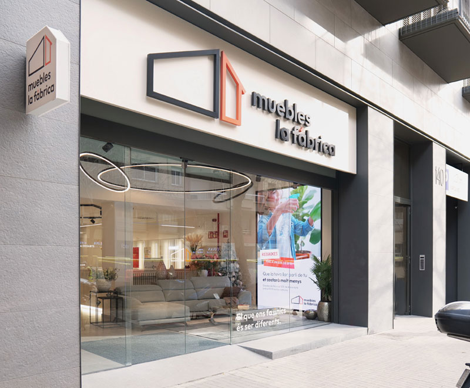

Sobre nosotros
Muebles Martin fue un pequeño taller familiar dedicado a la carpinteria. Hoy seguimos fabricando piezas con la misma atencion al detalle.
Trabajamos con madera y procesos que priorizan la durabilidad sobre las modas pasajeras.